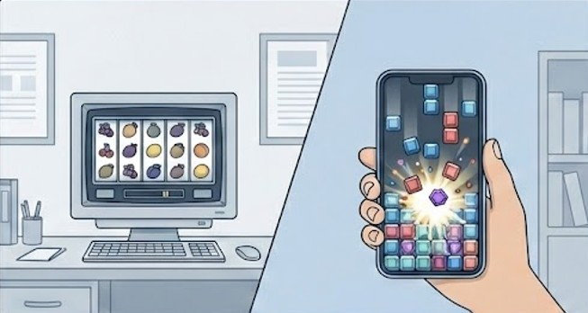
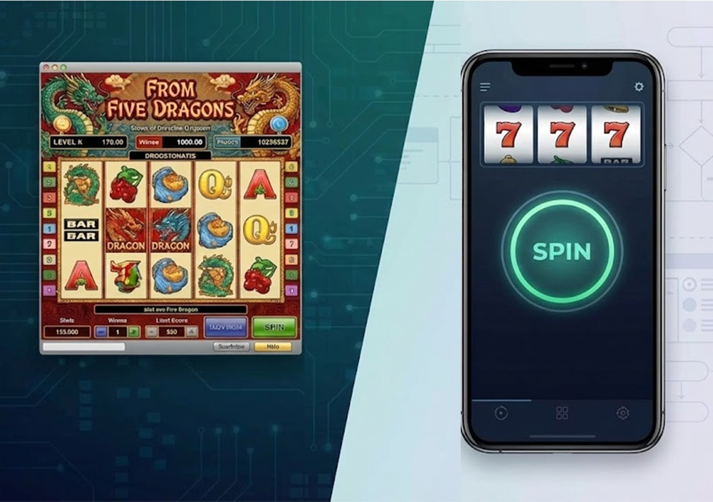
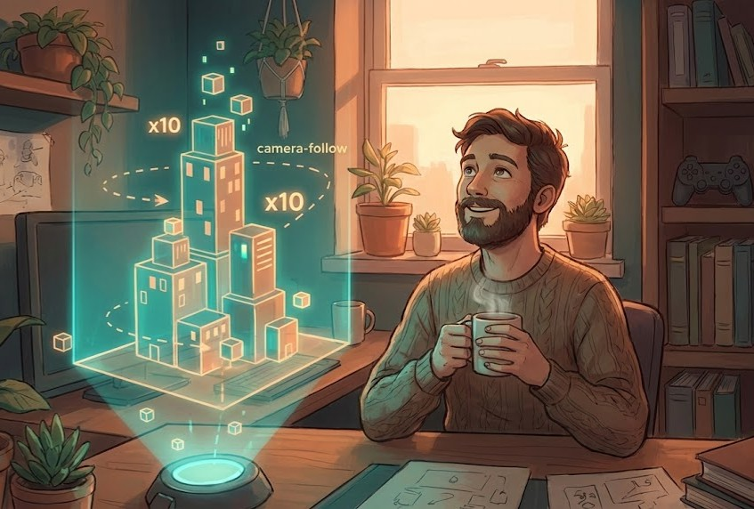
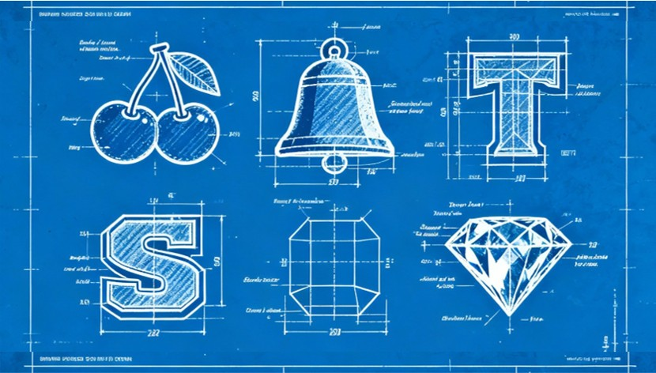
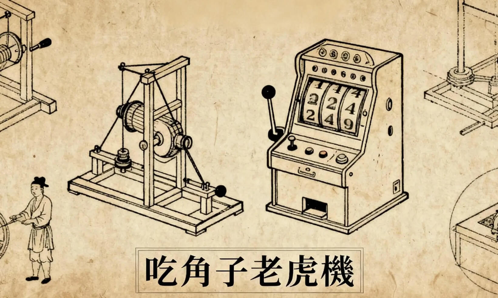

虎機職訓所
SLOT 遊戲設計、機率、節奏與產業觀察的文章整理。
從陪聊到產線：AI 的清醒筆記
閱讀文章 ↗

《所長碎念》為什麼手機 Slot 滿滿的掉落消除遊戲?
閱讀文章 ↗
2026-01-10 · Slot 企劃 / 產業觀察《所長碎念》從 Slot 到 Crash：博弈遊戲瓶頸與 Crash Game 的誕生
閱讀文章 ↗

《Slot 企劃》從 Five Dragons 看 UI/UX 如何影響 Web Slot 產品體驗
閱讀文章 ↗
2025-12-20 · Slot 企劃 / Slot 機率《Slot 企劃》為什麼 Slot 玩不到 50 手就棄坑？從高低波動、籌碼深度到體感設計
閱讀文章 ↗

【Slot 企劃】30 分鐘做出 HTML5 原型：遊戲企劃在 AI 時代的全新工作流
閱讀文章 ↗
2025-11-30 · Slot 企劃《Slot 企劃》規格書怎麼寫？拒絕通靈！用 BDD 概念打造秒懂的開發文件
閱讀文章 ↗
2025-11-23 · Slot原型《Slot 原型》遊戲企劃還是文件整理師？原型測試是關鍵
閱讀文章 ↗
2025-11-16 · Slot 機率《Slot 機率》企劃提案前先替遊戲「排盤」算一卦吧！
閱讀文章 ↗

《Slot 圖標》為什麼企劃要插手 Symbol 設計？關鍵的 0.3 秒體感！
閱讀文章 ↗

《Slot 節奏》Slot很簡單? 面試後刷新三觀!
閱讀文章 ↗